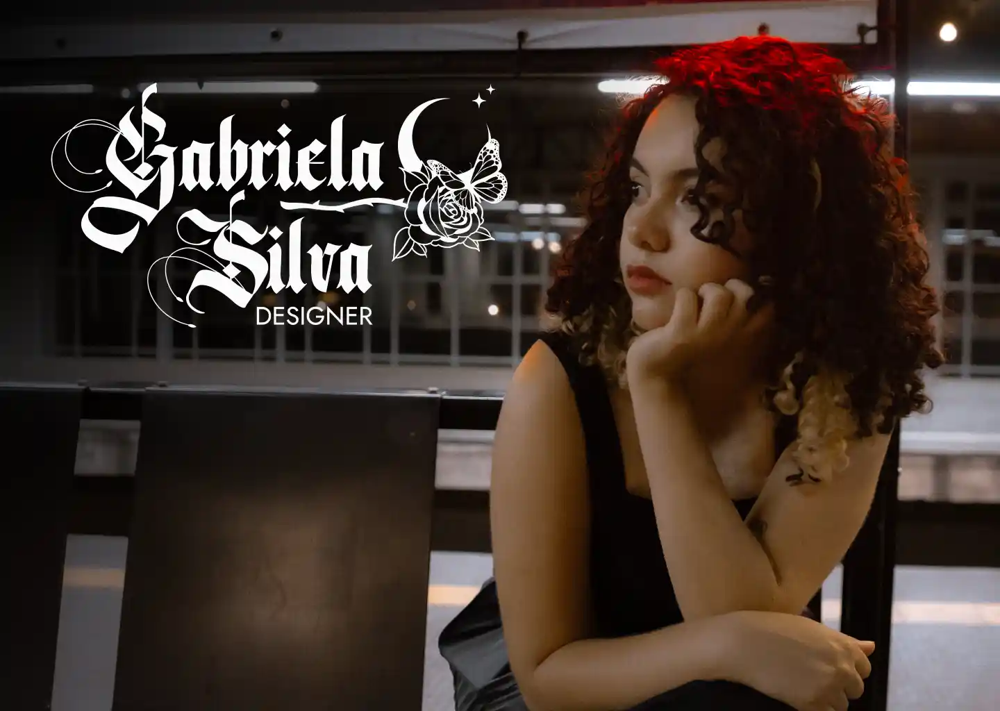
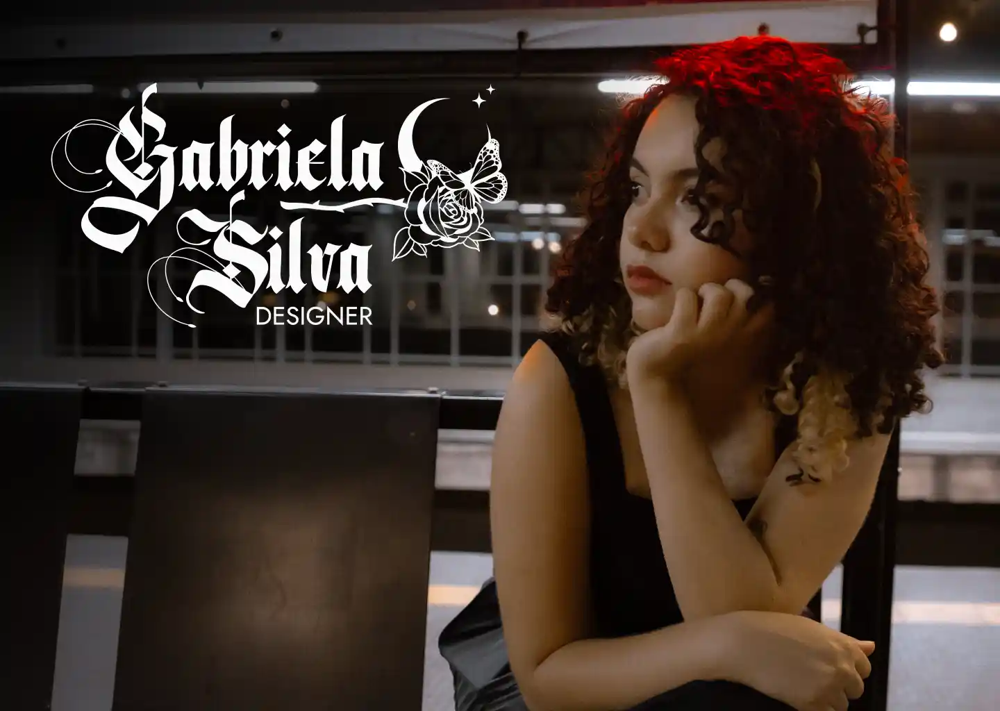
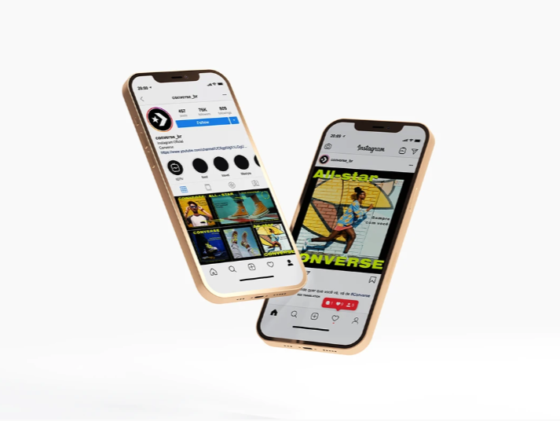
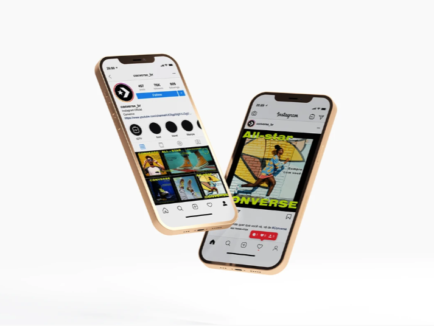

I'm a designer with a degree in Advertising and Propaganda and a specialization in User Experience and Digital Product Design.
Since I was a child, I’ve always been a bit “in my own world,” lost in my own creativity, so it was always clear that my path would be something related to creation.
At the end of high school, I faced the same dilemma that thousands of young people go through when choosing a college major, and I ended up deciding to study Advertising and Propaganda at UNA (particular college in my hometown).
During the first semesters, I realized there were so many career paths that I could take, but I always felt that Design was what I truly wanted to pursue, and that’s when I discovered UX and your branches. When the opportunity came to specialize, I didn’t hesitate: UX and Digital Design at PUC Minas (after all, I wanted to be a PUC student too, just like my parents haha).
My professional journey has included diverse experiences: internships in graphic design for Contagem’s transportation services, creating digital ads and social media content at an agency, working with digital marketing in e-commerce, and, after a period dedicated to UX/UI studies, I started freelancing in Portugal in 2024.
So, if you’d like my story to become part of your team or company, just get in touch, I would be delighted to create something special together!

I specialize in digital design, UX, and UI, and I believe that good design goes far beyond appearances, it transforms the way people connect with digital products, especially with technology being so deeply intertwined in our daily lives.
These are some of my projects, created either as part of courses or by turning ideas I found interesting into reality. Want to see more details and the development process for each one? Just take a look at my Behance!
Some of my favorite graphic design projects, created from my internships to the present. I believe that every piece of art tells a story, even the simplest ones, like social media posts, when created with a true purpose and the human perspective of a designer, can transform the way a brand communicates, strengthen its branding, and create real connections with real people.
Want to see more details and the process behind each project? Just check out my Behance.
 
